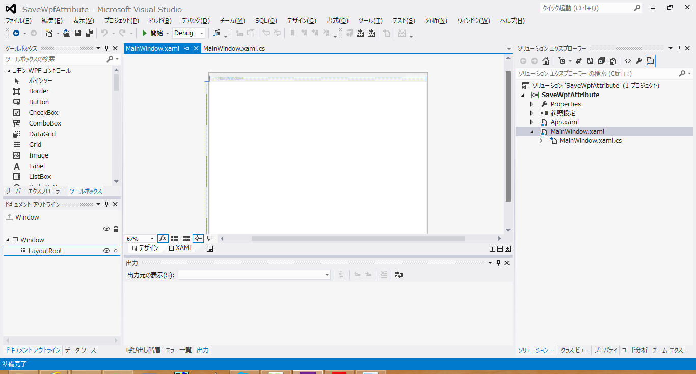
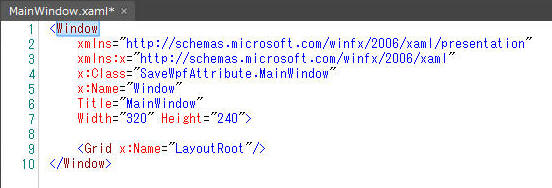
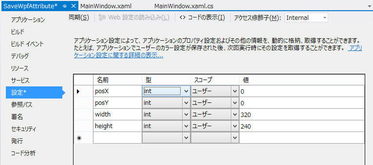

バインディングを使ってWPFアプリケーションの位置、サイズをアプリケーション終了時に保存する方法を示します。
様々な方法がりますが、ここでは
Properties.Settings.Default により設定を保存する方法を示します。この方法を応用して様々な属性を保存することが簡単にできます。
開発環境：
以下の開発環境で作成します。ただしWPF環境であれば恐らくすべて同じ方法で実現できると思います。
参考URL：
目次：
1. 新規プロジェクトを作成
2. 設定作成
3. XAML と 設定 をバインディング
4. 保存
新規WPFアプリケーションプロジェクトを作成します。ここでは”SaveWpfAttribute”という名称でプロジェクトを作成しました。
最終的に
(a)Window位置、(b)Windowサイズ、を保存するので、Windowのプロパティを下記の通りにしておきます。新規プロジェクトを作成したままにしておけば良いはずです。
あとWindowサイズをとりあえず 320×240 へ変更しておきました。
Visual Studio のこのときの画面状態です。

XAMLの全コードを以下に記載します。当然ながらすかすかです。

Visual Studio でプロジェクトのプロパティを開き、[設定]タブから下記の通り４つの名前を作成します。
posX と posY
がWindowの位置、width と height がWindowのサイズ情報を扱います。
スコープは必ず”ユーザ”にします。”アプリケーション”にした場合は設定の保存を行えず、読み取り専用になります。

XAMLの属性 と 設定 をバインディングします。
「xmlns:p="clr-namespace:SaveWpfAttribute.Properties"」の部分の”SaveWpfAttribute”は、プロジェクトの名前空間です。ここはそれぞれのプロジェクトの内容に合わせて変更します。
<Window
xmlns="http://schemas.microsoft.com/winfx/2006/xaml/presentation"
xmlns:x="http://schemas.microsoft.com/winfx/2006/xaml"
xmlns:p="clr-namespace:SaveWpfAttribute.Properties"
x:Class="SaveWpfAttribute.MainWindow"
x:Name="Window"
Title="MainWindow"
Width="{Binding Source={x:Static p:Settings.Default}, Path=width, Mode=TwoWay, UpdateSourceTrigger=PropertyChanged}"
Height="{Binding Source={x:Static p:Settings.Default}, Path=height, Mode=TwoWay, UpdateSourceTrigger=PropertyChanged}"
Left="{Binding Source={x:Static p:Settings.Default}, Path=posX, Mode=TwoWay, UpdateSourceTrigger=PropertyChanged}"
Top="{Binding Source={x:Static p:Settings.Default}, Path=posY, Mode=TwoWay, UpdateSourceTrigger=PropertyChanged}"
>
<Grid x:Name="LayoutRoot"/>
</Window>
|
プログラムを終了するときに現在の属性を保存します。
アプリケーションの Closed イベント発生時に
Properties.Setting.Default.Save() を行うことで実施します。保存先は下記の通りです。
"C:\Users\%USENAME%\AppData\Local\SaveWpfAttribute\・・・\user.config"
ちなみに今回は実装しませんが、規定値へ強制的に戻すには Properties.Setting.Default.Reset() で行います。
<Window
xmlns="http://schemas.microsoft.com/winfx/2006/xaml/presentation"
xmlns:x="http://schemas.microsoft.com/winfx/2006/xaml"
xmlns:p="clr-namespace:SaveWpfAttribute.Properties"
x:Class="SaveWpfAttribute.MainWindow"
x:Name="Window"
Title="MainWindow"
Width="{Binding Source={x:Static p:Settings.Default}, Path=width, Mode=TwoWay, UpdateSourceTrigger=PropertyChanged}"
Height="{Binding Source={x:Static p:Settings.Default}, Path=height, Mode=TwoWay, UpdateSourceTrigger=PropertyChanged}"
Left="{Binding Source={x:Static p:Settings.Default}, Path=posX, Mode=TwoWay, UpdateSourceTrigger=PropertyChanged}"
Top="{Binding Source={x:Static p:Settings.Default}, Path=posY, Mode=TwoWay, UpdateSourceTrigger=PropertyChanged}"
Closed="Window_Closed"
>
<Grid x:Name="LayoutRoot"/>
</Window>
|
using System;
using System.Collections.Generic;
using System.Text;
using System.Windows;
using System.Windows.Controls;
using System.Windows.Data;
using System.Windows.Documents;
using System.Windows.Input;
using System.Windows.Media;
using System.Windows.Media.Imaging;
using System.Windows.Shapes;
namespace SaveWpfAttribute
{
public partial class MainWindow : Window
{
public MainWindow()
{
this.InitializeComponent();
}
private void Window_Closed(object sender, System.EventArgs e)
{
Properties.Settings.Default.Save();
}
}
}
|
サンプルプログラム：ダウンロード
作成： Visual Studio 2012
記載： 2012年12月23日 木下英俊